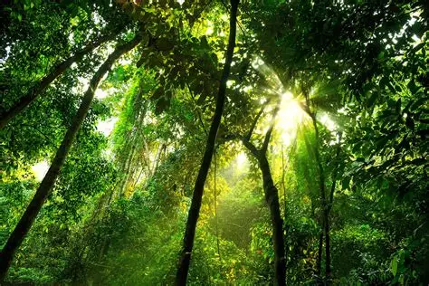

Verda
Population: 200 000
Cities: Gol and Daz
Language: Faden but everyone can write Izen because of school.

Verda is known for its vast rainforests and exotic wildlife and plant life. It is also the only place where sparkle night mushrooms and tear trees can grow. This means that their main trades are tourism and drugs. Although the population is small for the area, there are not really any large towns. Verdians live apart from everyone or is small villages that trade amongst themself and visitors. Verda is a reasonably wealthy country because of their trades but verdians have a strong sense of sharing the land rather than using it so they are more focused on living sustainably than living in wealth. Most people chose not to live in Verda as the communities can be isolating and their life style involves working hard to save money for when they need it not for luxuries. Since it rains a lot there it is often prone to flooding but they need the rain since the land needs to be damp for many plants that grow there. Sawyer’s taxing affects them a lot because it doesn’t aline with Verdian values and will mean they lose the back up money for the disaster prone area.